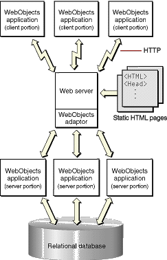

| PATH |

Although the majority of websites primarily publish static data, the number of sites that publish dynamic content is growing rapidly. Many corporations use intranets, the Internet, or both to provide easy access to internal applications and data. An online store selling books, music, or even computers is one example of a Web-enabled client-server application.
Web-enabled applications can have huge advantages over traditional applications. Clients don't have to install the application, which not only saves client disk space but ensures that the user always has the most up-to-date version of the application. As well, the client computers can be Macintosh computers, PCs, or workstations-anything that can run a Web browser with the necessary capabilities.
WebObjects allows you to develop two different flavors of Web-enabled application: HTML-based applications and Java Client applications. HTML-based applications are analogous to Common Gateway Interface (CGI) applications and consist of dynamically-generated HTML pages accessed through a Web browser. Java Client moves part of your application to the client-side computer and enlists Sun's Java Foundation Classes (JFC) to give it the rich user interface found in a more traditional desktop application.
When you need to develop a HTML-based application like a shopping cart, you can create it quickly and easily with the WebObjects development tools. WebObjects supplies a large number of prebuilt components-Web pages, or portions of Web pages, from which you can build your Web application's interface. These components range from simple user interface widgets (for example, submit buttons, checkboxes, and tables) to complex ones (for example, toolbars). The set of components that you can use with WebObjects is extensible, so you can create components that can be reused across all of your Web applications.
Your application isn't entirely built of components. You create WebObjects applications from a combination of components and Java classes. You put your application-specific business logic in some of these classes. WebObjects provides the rest of them.
The basic structure of an HTML-based Web application matches that of a dynamic publishing site that uses WebObjects. Thus, Figure 2-2 applies to HTML-based Web applications as well.
When you need the fast and rich user interface of desktop client-server applications, you can partition your application so that a portion of it-including all or part of the user interface-runs in Java directly on the client. Client-server communication is handled by WebObjects. WebObjects applications that are partitioned in this way are known as Java Client applications.
Java Client distributes the objects of your WebObjects application between the application server and one or more clients-typically Java applications. It is based on a distributed multi-tier client-server architecture where processing duties are divided between a client, an application server, a database server, and a Web server. With a Java Client application, you can partition business objects containing business logic and data into a client side and a server side. This partitioning can improve performance and at the same time help to secure legacy data and business rules.
Figure 2-3 illustrates a Java Client application in which the client portion is running as an application installed on the user's computer. As with an HTML-based WebObjects application, the application can communicate with the server side using HTTP. In addition, Java Client passes objects between a portion of your application residing on the user's computer and the portion of your application that remains on the application server.
Figure 2-3 A website running Java Client applications
Java Client allows your application to look and feel like a traditional desktop application and still take full advantage of the power of WebObjects.
© 2001 Apple Computer, Inc.